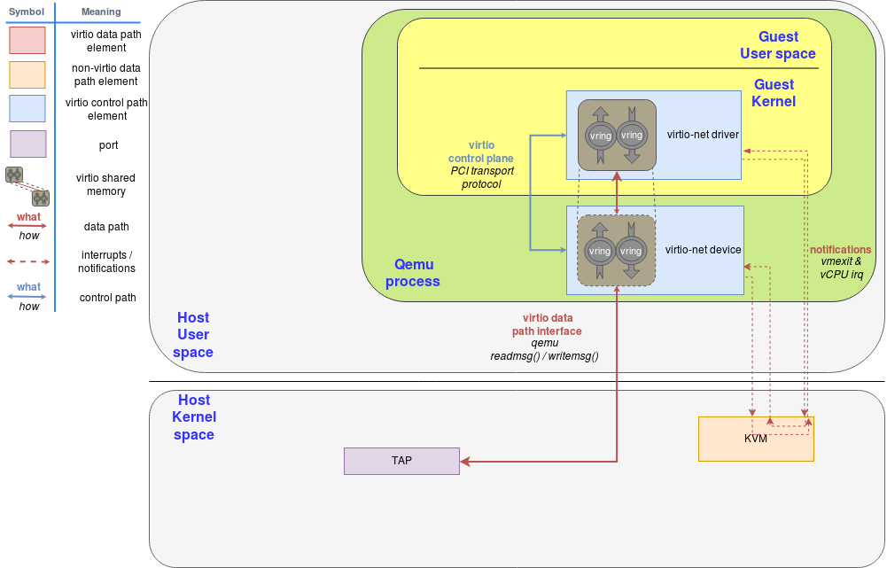

To understand how can we implement a vhost-balloon device, we first need to understand the following things:
- Virtio protocol
- How ballooning works
- How virtio-balloon is implemented
- vhost protocol
- How vhost-net is implemented
- How to adapt virtio-balloon to use vhost protocol
virtio protocol
virtio is invented to unify device emulation. It is a interface that captures the common characteristics of various IO processes. The abstract device in the view of virtio has two logically separated parts, i.e., control plane and data plane.
The data plane is responsible for passing data buffers between guest and devices, delivering notifications when a buffer is ready and providing a way to turn on or turn off the notifications.
The control plane is associated with the life cycle of the device. When a virtio device is discovered, guest and device need to be able to negotiate the capability (feature bits) of the driver or device. The guest needs to configure the device via a configuration space. The device can indicate its status using status bits. If error happens or guest needs to shutdown, the device needs to support reset.
Passing data buffers
The core interface for data exchange in the virtio protocol is logically a pair (available and used) of ring buffers (struct virtio_vring or vring for short). The guest can put data onto the available ring. When the device finished processing those data, a response is put onto the used ring. To avoid copying data back-and-forth, there is a descriptor table that stores information, i.e., starting GPA and length, about the data needed by the IO. The descriptors are organised into a linked list to facilitate the situation when one IO operation needs multiple buffers. An example will be when processing a network packet, both a header buffer and a body buffer are needed . And both the available and the used ring store indices into the descriptor table. To gather all the data buffers needed, one can use the index to find the first descriptor in the descriptor table and then traverse the linked list by following the next field.
To control the read/write access right of the data represented by a descriptor, a flag field is needed in the descriptor. The flag field also contains bits to indicate whether the descriptor is the last element in the descriptor list.
The available ring is placed right next to the end of the descriptor table as shown below. The used ring is placed in the next page boundary after the end of the available ring.
code
// qemu/hw/virtio/virtio.c:296
vring->avail = vring->desc + vring->num * sizeof(VRingDesc);
vring->used = vring_align(vring->avail +
offsetof(VRingAvail, ring[vring->num]),
vring->align);
The virtio community has another concept called virtqueue which refers to the more general concept of guest/device communication. vring is one concrete data structure implementing virtqueue.
Delivering notifications
virtqueue supports 5 operations:
struct virtqueue_ops {
int (*add_buf)(struct virtqueue *vq, struct scatterlist sg[], unsigned int out_num, unsigned int in_num, void *data);
void *(*get_buf)(struct virtqueue *vq, unsigned int *len);
void (*kick)(struct virtqueue *vq);
void (*disable_cb)(struct virtqueue *vq);
bool (*enable_cb)(struct virtqueue *vq);
};
The notification for available buffer is issued by the guest through a kick() call. The notification for used buffer is often delivered via device interrupts. The guest kernel's interrupt handler will call the callback registered by the driver when such interrupts arrive. To turn on or off such notifications, enable_cb anddisable_cb can be used.
Turn on or turn off the notifications
Flags in the available and used rings are used to control whether the notification should trigger or not. Available ring flag is set by the device and is used for telling the driver that no nofication is needed when adding a buffer. Used ring flag is the opposite, it's set by the guest driver to tell device that no nofication is needed when an buffer is consumed and put onto the used ring.
Feature bits
Configuration space
Status bits
Reset
vhost
vhost has two variant, vhost-kernel and vhost-user. The objective of vhost is to offload device emulation logic out of the hypervisor either into host kernel space (vhost-kernel) or another process (vhost-user). The advantage of is saving context switch overhead. After guest adding a buffer and kicking the virtio device, the guest will vmexit to KVM, which is located in the host kernel space. For network devices, packets can be directly passed down using kernel's TCP/IP stack without switching back-and-forth between the user-space hypervisor emulation logic. For vhost-user, they are very useful when virtualising high speed physical network cards. Such emulation logic will often be implemented in a user mode polling thread with kick disabled. This thread can fetch IOs from guests and send them out directly in a single loop, avoiding lots of context switches.
To make this happen, we need to make the vring visible to others. For vhost-kernel, this is enabled by an IOCTL interface (vhost_vring_ioctl in kernel code).
IOCTL interface
| IOCTL | Explanation |
|---|---|
VHOST_SET_VRING_NUM | Setting the descriptor table size in unit of descriptors. |
VHOST_SET_VRING_ADDR | Setting the beignning HVA of vring structures. |
VHOST_SET_VRING_BASE | Setting the initial usable slot in the descriptor table. |
VHOST_SET_VRING_CALL | Setting the eventfd file descriptor used by vhost to deliver notifications to the guest. (vhost ->call-> guest) |
VHOST_SET_VRING_KICK | Setting the eventfd file descriptor used by the guest to deliver notifications to vhost. (guest ->kick-> vhost) |
Block diagrams

Flow charts


vhost-net implementation
vhost_dev interfaces used by vhost-net
| Fn | Meaning |
|---|---|
vhost_dev_ioctl() | |
vhost_dev_init() | |
vhost_dev_flush() | |
vhost_dev_stop() | |
vhost_dev_cleanup() | |
vhost_dev_{has,check,set,reset}_owner() |
qemu backend (v8.1.2)
code
// net/tap.c:811
int net_init_tap(const Netdev *netdev, const char *name,
NetClientState *peer, Error **errp)
{
//...
for (i = 0; i < queues; i++) {
fd = net_tap_init(tap, &vnet_hdr, i >= 1 ? "no" : script,
ifname, sizeof ifname, queues > 1, errp);
//...
net_init_tap_one(tap, peer, "tap", name, ifname,
i >= 1 ? "no" : script,
i >= 1 ? "no" : downscript,
vhostfdname, vnet_hdr, fd, &err);
//...
}
//...
}
// net/tap.c:605
static int net_tap_init(const NetdevTapOptions *tap, int *vnet_hdr,
const char *setup_script, char *ifname,
size_t ifname_sz, int mq_required, Error **errp)
{
//...
fd = RETRY_ON_EINTR(tap_open(ifname, ifname_sz, vnet_hdr, vnet_hdr_required,
mq_required, errp));
//...
}
// net/tap.c:687
static void net_init_tap_one(const NetdevTapOptions *tap, NetClientState *peer,
const char *model, const char *name,
const char *ifname, const char *script,
const char *downscript, const char *vhostfdname,
int vnet_hdr, int fd, Error **errp)
{
//...
vhostfd = open("/dev/vhost-net", O_RDWR);
//...
s->vhost_net = vhost_net_init(&options);
//...
}
// hw/net/vhost-net.c:167
struct vhost_net *vhost_net_init(VhostNetOptions *options)
{
int r;
bool backend_kernel = options->backend_type == VHOST_BACKEND_TYPE_KERNEL;
struct vhost_net *net = g_new0(struct vhost_net, 1);
// ...
if (backend_kernel) {
r = vhost_net_get_fd(options->net_backend);
// ...
}
// ...
r = vhost_dev_init(&net->dev, options->opaque,
options->backend_type, options->busyloop_timeout,
&local_err);
// ...
vhost_net_ack_features(net, features);
return net;
// ...
}
// hw/virtio/vhost.c:1399
int vhost_dev_init(struct vhost_dev *hdev, void *opaque,
VhostBackendType backend_type, uint32_t busyloop_timeout,
Error **errp)
{
// ...
r = vhost_set_backend_type(hdev, backend_type);
// ...
for (i = 0; i < hdev->nvqs; ++i, ++n_initialized_vqs) {
r = vhost_virtqueue_init(hdev, hdev->vqs + i, hdev->vq_index + i);
// ...
}
// ...
}
// hw/virtio/vhost.c:239
static int vhost_set_backend_type(struct vhost_dev *dev,
VhostBackendType backend_type)
{
// ...
switch (backend_type) {
// ...
case VHOST_BACKEND_TYPE_KERNEL:
dev->vhost_ops = &kernel_ops;
break
// ...
}
// ...
}
// hw/virtio/vhost.c:1343
static int vhost_virtqueue_init(struct vhost_dev *dev,
struct vhost_virtqueue *vq, int n)
{
int vhost_vq_index = dev->vhost_ops->vhost_get_vq_index(dev, n);
struct vhost_vring_file file = {
.index = vhost_vq_index,
};
int r = event_notifier_init(&vq->masked_notifier, 0);
// ...
file.fd = event_notifier_get_wfd(&vq->masked_notifier);
r = dev->vhost_ops->vhost_set_vring_call(dev, &file);
// ...
}
// util
int event_notifier_init(EventNotifier *e, int active)
{
// ...
ret = eventfd(0, EFD_NONBLOCK | EFD_CLOEXEC);
// ...
}
// include/hw/virtio/vhost.h:139
struct vhost_net {
struct vhost_dev dev;
struct vhost_virtqueue vqs[2];
int backend;
NetClientState *nc;
};
// include/net/net.h:101
struct NetClientState {
NetClientInfo *info;
int link_down;
QTAILQ_ENTRY(NetClientState) next;
NetClientState *peer;
NetQueue *incoming_queue;
char *model;
char *name;
char info_str[256];
unsigned receive_disabled : 1;
NetClientDestructor *destructor;
unsigned int queue_index;
unsigned rxfilter_notify_enabled:1;
int vring_enable;
int vnet_hdr_len;
bool is_netdev;
bool do_not_pad; /* do not pad to the minimum ethernet frame length */
bool is_datapath;
QTAILQ_HEAD(, NetFilterState) filters;
};
const VhostOps kernel_ops = {
.backend_type = VHOST_BACKEND_TYPE_KERNEL,
.vhost_backend_init = vhost_kernel_init,
.vhost_backend_cleanup = vhost_kernel_cleanup,
.vhost_backend_memslots_limit = vhost_kernel_memslots_limit,
.vhost_net_set_backend = vhost_kernel_net_set_backend,
.vhost_scsi_set_endpoint = vhost_kernel_scsi_set_endpoint,
.vhost_scsi_clear_endpoint = vhost_kernel_scsi_clear_endpoint,
.vhost_scsi_get_abi_version = vhost_kernel_scsi_get_abi_version,
.vhost_set_log_base = vhost_kernel_set_log_base,
.vhost_set_mem_table = vhost_kernel_set_mem_table,
.vhost_set_vring_addr = vhost_kernel_set_vring_addr,
.vhost_set_vring_endian = vhost_kernel_set_vring_endian,
.vhost_set_vring_num = vhost_kernel_set_vring_num,
.vhost_set_vring_base = vhost_kernel_set_vring_base,
.vhost_get_vring_base = vhost_kernel_get_vring_base,
.vhost_set_vring_kick = vhost_kernel_set_vring_kick,
.vhost_set_vring_call = vhost_kernel_set_vring_call,
.vhost_set_vring_err = vhost_kernel_set_vring_err,
.vhost_set_vring_busyloop_timeout =
vhost_kernel_set_vring_busyloop_timeout,
.vhost_set_features = vhost_kernel_set_features,
.vhost_get_features = vhost_kernel_get_features,
.vhost_set_backend_cap = vhost_kernel_set_backend_cap,
.vhost_set_owner = vhost_kernel_set_owner,
.vhost_reset_device = vhost_kernel_reset_device,
.vhost_get_vq_index = vhost_kernel_get_vq_index,
.vhost_vsock_set_guest_cid = vhost_kernel_vsock_set_guest_cid,
.vhost_vsock_set_running = vhost_kernel_vsock_set_running,
.vhost_set_iotlb_callback = vhost_kernel_set_iotlb_callback,
.vhost_send_device_iotlb_msg = vhost_kernel_send_device_iotlb_msg,
};
Full IOCTL table for vhost-net
| IOCTL | fn |
|---|---|
vhost_net_ioctl | |
VHOST_NET_SET_BACKEND | long vhost_net_set_backend(struct vhost_net *n, unsigned index, int fd) |
VHOST_GET_FEATURES | |
VHOST_SET_FEATURES | int vhost_net_set_features(struct vhost_net *n, u64 features) |
VHOST_GET_BACKEND_FEATURES | |
VHOST_SET_BACKEND_FEATURES | void vhost_set_backend_features(struct vhost_dev *dev, u64 features) |
VHOST_RESET_OWNER | long vhost_net_reset_owner(struct vhost_net *n) |
VHOST_SET_OWNER | long vhost_net_set_owner(struct vhost_net *n) |
vhost_dev_ioctl | |
VHOST_SET_MEM_TABLE | long vhost_set_memory(struct vhost_dev *d, struct vhost_memory __user *m) |
VHOST_SET_LOG_BASE | |
VHOST_SET_LOG_FD | |
vhost_vring_ioctl | |
VHOST_SET_VRING_NUM | long vhost_vring_set_num(struct vhost_dev *d, struct vhost_virtqueue *vq, void __user *argp) |
VHOST_SET_VRING_ADDR | long vhost_vring_set_addr(struct vhost_dev *d, struct vhost_virtqueue *vq, void __user *argp) |
VHOST_SET_VRING_BASE | |
VHOST_GET_VRING_BASE | |
VHOST_SET_VRING_CALL | |
VHOST_SET_VRING_ERR | |
VHOST_SET_VRING_ENDIAN | |
VHOST_GET_VRING_ENDIAN | |
VHOST_SET_VRING_BUSYLOOP_TIMEOUT | |
VHOST_GET_VRING_BUSYLOOP_TIMEOUT |
Ballooning
Rebalancer
def rebalance(vm):
if vm.idle_memory > vm.idle_threshold:
vm.reclaim_idle_memory()
if abs(vm.perf_indicator - vm.perf_target) <= epsilon:
# within the targeted performance
pass
else if vm.perf_indicator > vm.perf_target:
# there is DRAM allowed for substitution
vm.balloon.pmem.deflate(delta)
vm.balloon.dram.inflate(delta)
else
# the DRAM allocated cannot statisfy the performance target
vm.balloon.dram.deflate(delta)
vm.balloon.pmem.inflate(delta)
vm.perf_history.record(vm.perf_indicator)